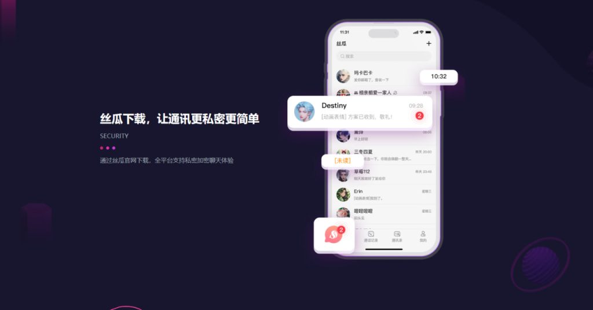

丝瓜聊天如何注册？
要注册丝瓜聊天，首先下载并安装应用。打开应用后，点击“注册”按钮，输入您的手机号码或电子邮件地址，并设置密码。接下来，系统会向您的手机或邮箱发送验证码，输入验证码后即可完成注册。注册成功后，您可以设置个人资料并开始使用丝瓜聊天的各种功能。
丝瓜聊天注册流程
如何通过手机号码注册丝瓜聊天
-
打开丝瓜聊天应用：首先，下载并安装丝瓜聊天应用，安装完成后，打开应用并点击首页上的“注册”按钮，进入注册页面。在注册页面，您会看到多个注册选项，选择“手机号码注册”。
-
输入手机号码：在手机号码注册页面，输入您的有效手机号码，并确保号码格式无误。手机号需要确保是可接收短信的有效号码，这样才能顺利接收到验证码。
-
接收验证码：点击“获取验证码”按钮后，系统会向您输入的手机号码发送验证码短信。几秒钟后，您将收到包含验证码的短信，输入验证码后，点击“确认”按钮完成验证，继续注册流程。
如何通过邮箱注册丝瓜聊天
-
选择邮箱注册选项：在丝瓜聊天的注册页面，选择“邮箱注册”选项，进入邮箱注册界面。邮箱注册是另一种便捷的方式，适合不愿使用手机号码的用户。
-
填写邮箱信息：在邮箱注册页面，您需要输入一个有效的电子邮箱地址，并设置一个强密码。密码最好包含字母、数字及特殊字符，以确保账户安全。确保输入的邮箱地址能够正常接收邮件，避免遗漏重要通知或验证信息。
-
接收并确认验证邮件：完成邮箱信息填写后，点击“注册”按钮，系统会自动向您的邮箱发送一封验证邮件。打开您的邮箱，找到来自丝瓜聊天的验证邮件，点击邮件中的确认链接或验证码，完成邮箱验证，成功完成注册流程。
丝瓜聊天的注册验证
如何接收丝瓜聊天的验证码
-
获取验证码请求：在丝瓜聊天的注册过程中，您输入手机号码或电子邮件后，系统会自动向您提供的联系方式发送验证码。无论是手机号码还是邮箱，验证码通常会在几秒钟内发送至您填写的联系方式。
-
确保号码或邮箱正确：请确认输入的手机号码或电子邮箱地址无误。确保手机号带有国家区号，并且邮件地址格式正确。如果您使用手机号码注册，请确保手机号能接收到短信；若使用邮箱注册，请确保邮箱地址有效且能接收邮件。
-
检查垃圾邮件箱：如果您使用邮箱注册并未收到验证码，请检查您的垃圾邮件箱或垃圾邮件文件夹。邮件有时可能会被误判为垃圾邮件。确保没有遗漏任何重要邮件。
验证码未收到怎么办
-
检查网络连接：如果验证码长时间未收到，首先检查您的手机或设备是否连接到网络。对于短信验证码，确保您的手机信号正常；对于邮箱验证码，确保您能够正常接收电子邮件。
-
重新请求验证码：如果验证码未能及时到达，可以尝试重新请求验证码。点击“重新发送验证码”按钮，系统会再次向您提供新的验证码。通常情况下，验证码的有效期为几分钟，确保在有效期内使用验证码进行验证。
-
使用其他联系方式：如果您始终未能收到验证码，可以尝试更换联系方式。例如，如果您使用手机号码未收到验证码，可以改为使用电子邮箱进行注册，或反之，切换到其他有效的联系方式进行注册验证。

丝瓜聊天账户安全设置
如何启用双重认证保障账户安全
-
访问安全设置：在丝瓜聊天应用中，首先进入“设置”页面，找到并点击“账户安全”或“隐私设置”选项。这里您可以找到启用双重认证的功能，点击进入后即可开始设置双重认证。
-
选择双重认证方式：丝瓜聊天提供多种双重认证方式，包括通过短信发送验证码和使用认证应用（如Google Authenticator）生成动态验证码。您可以选择适合您的方式。对于短信验证码，系统会要求您输入有效的手机号码；而使用认证应用时，则需要扫描二维码或输入密钥进行设置。
-
确认并启用：完成设置后，系统会要求您输入一次性验证码进行确认。输入正确的验证码后，双重认证功能将被成功启用。以后每次登录时，除了输入密码，还需要通过短信或认证应用生成的验证码来验证身份，大大增强了账户的安全性。
如何更改丝瓜聊天密码
-
访问账户设置：首先，打开丝瓜聊天应用，进入“设置”页面。在“账户”或“安全”部分，找到并点击“更改密码”选项。系统会要求您输入当前密码来确认身份，确保只有账户的合法拥有者可以修改密码。
-
验证身份：在您输入当前密码后，系统会验证您的身份。验证成功后，您将能够进入下一步，设置新密码。为了确保账户的安全性，丝瓜聊天会提示您设置一个强密码，密码应该包含大写字母、小写字母、数字和特殊字符，长度不低于8位。
-
设置新密码：输入新密码后，系统会要求您再次确认新密码。确保两次输入的密码一致。设置完成后，点击确认保存新的密码。建议定期更换密码，并确保密码的复杂性，以防止账号被恶意攻击。

丝瓜聊天多设备登录
如何在多个设备上登录丝瓜聊天
-
安装应用并登录：首先，您需要在多个设备上安装丝瓜聊天应用。无论是在安卓、iOS设备，还是PC端，您都可以下载并安装丝瓜聊天。安装后，打开应用，输入您的账号信息（手机号码或邮箱和密码）进行登录。
-
同步登录：在不同的设备上使用相同的账号信息登录，丝瓜聊天会自动同步您的账户信息，包括联系人列表、聊天记录等，确保在多个设备上使用时，数据不会丢失。
-
无缝切换设备：丝瓜聊天允许用户在多个设备上同时登录。您可以在手机上进行聊天，随时切换到电脑或平板，继续进行相同的会话。多个设备之间不会互相干扰，确保流畅的用户体验。
如何同步丝瓜聊天账户数据
-
实时数据同步：丝瓜聊天通过云同步技术，确保在不同设备间同步账户数据。当您在一台设备上发送消息或进行操作时，另一台设备会立刻接收到相应的更新。这种同步方式适用于聊天记录、联系人信息和群聊内容等。
-
聊天记录和设置同步：当您登录到另一台设备时，所有的聊天记录和设置都会自动同步，确保不会丢失任何重要信息。例如，您在手机上查看的消息内容会同步到电脑端，保持一致。
-
跨平台同步支持：丝瓜聊天支持跨平台同步，意味着您可以在安卓、iOS、Windows等不同操作系统之间进行无缝切换，所有数据都会即时同步，保持账户信息的一致性。

丝瓜聊天注册后如何开始使用
如何添加好友并开始聊天
-
添加丝瓜聊天好友：在丝瓜聊天注册并登录后，您可以通过手机号、用户名或二维码添加好友。在主界面上，点击“添加好友”按钮，输入好友的手机号或用户名进行搜索。如果您的好友已经注册了丝瓜聊天，他们会显示在搜索结果中，您可以选择添加为好友。
-
发送好友请求：输入好友信息后，点击“添加”按钮，发送好友请求。等待对方接受您的请求后，您就可以开始和他们进行聊天。您也可以通过扫描好友的二维码来快速添加好友。
-
开始聊天：一旦添加好友成功，点击好友的头像进入聊天界面，您可以进行文字、语音或视频聊天。丝瓜聊天支持文件、图片和视频发送，使沟通更加便捷高效。
如何加入丝瓜聊天群聊
-
创建群聊：如果您希望与多个好友一起聊天，可以创建群聊。在主界面点击“新建群聊”按钮，选择您想要邀请加入的好友，输入群聊名称，点击“创建”即可成功创建群聊。
-
邀请好友加入群聊：创建群聊后，您可以通过“邀请好友”功能，向其他联系人发送邀请。选择联系人并发送邀请请求，待对方同意后，他们就会加入到群聊中。
-
加入现有群聊：如果您想加入已经存在的群聊，您可以通过好友邀请或扫描群聊二维码来加入。群主或管理员可以生成一个群聊二维码，您只需扫描该二维码即可加入该群聊。